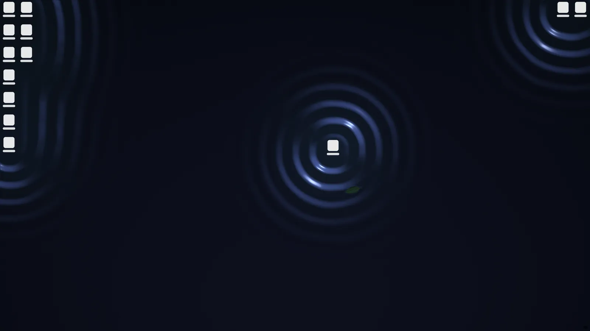
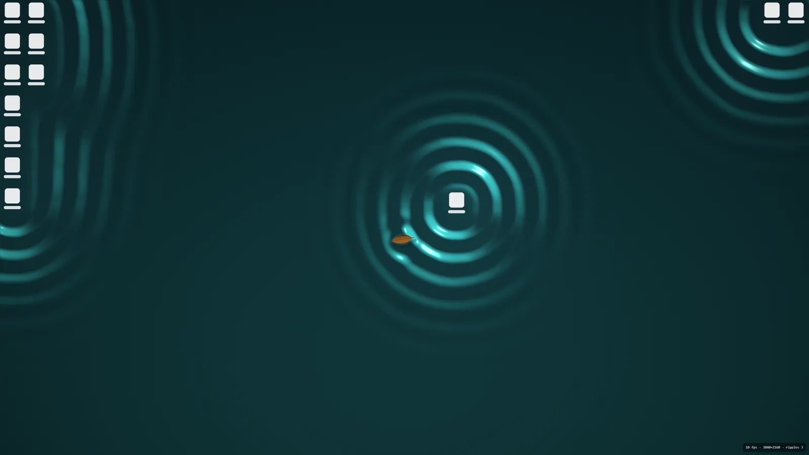
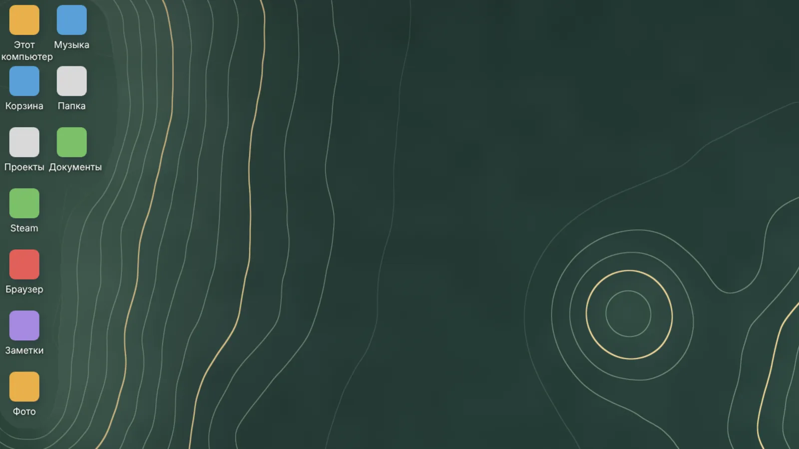
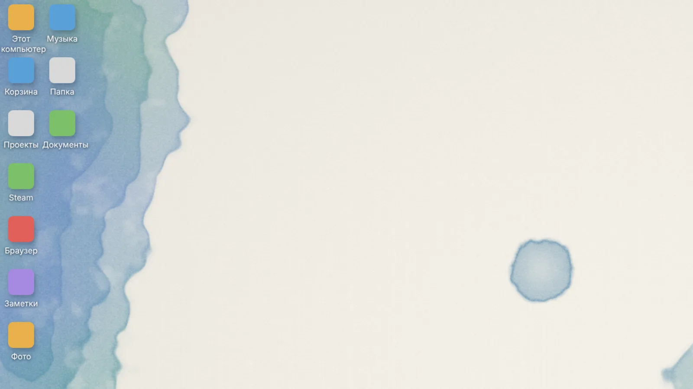
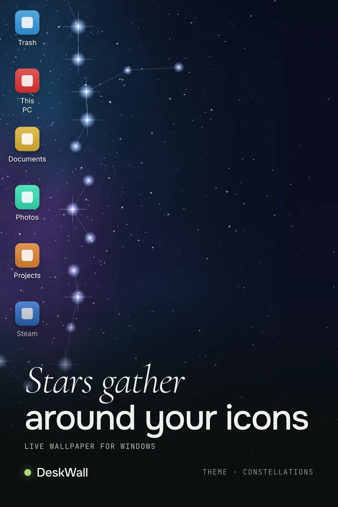
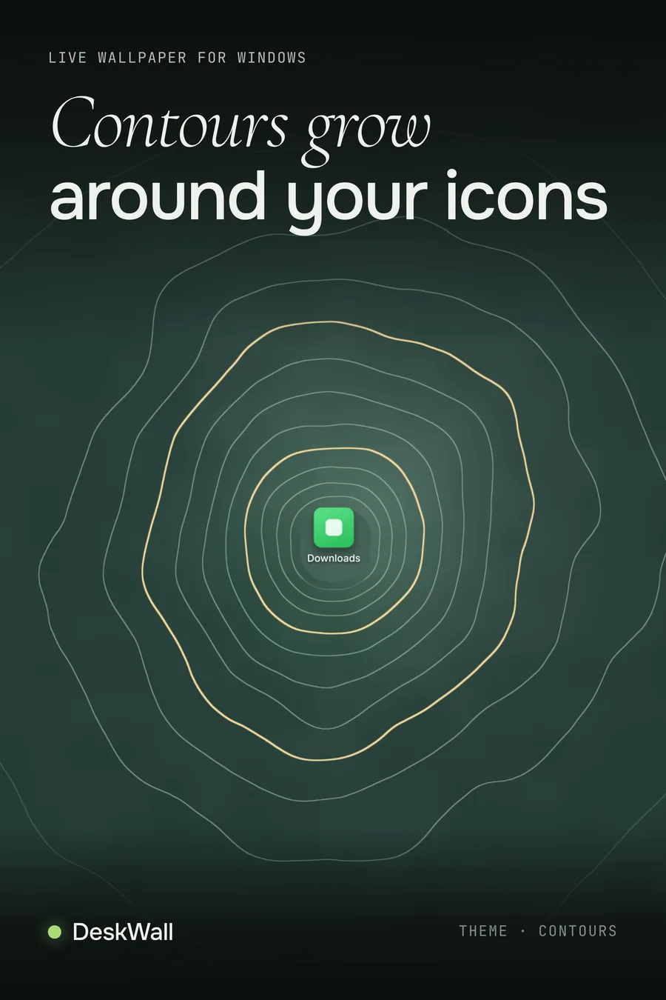
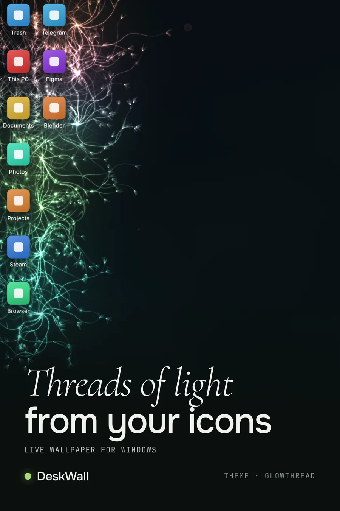

Live wallpaper for Windows
Life growsfrom your icons
DeskWall turns the empty desktop into a calm landscape that grows around your icons and moves when you move them. The rest of the screen stays quiet.
FREE · OPEN SOURCE · WINDOWS 11 · EARLY PROTOTYPE
How it works
Scenery that follows your desktop
DeskWall reads where your icons sit and builds the picture around them. Drag an icon and the landscape reshapes smoothly. Place two close together and their shapes merge into one.
01
Icons are the seed
Every shortcut gets its own patch of ripples, contours, threads or stars. Empty space stays empty.
02
It reacts to you
Move an icon, click, or sweep the cursor across the screen and the scene answers with small details.
03
It stays out of the way
Runs at 30 fps by default and pauses when a window or a game covers the desktop.
Themes
Six scenes, one idea
Every theme is drawn for DeskWall. Pick one from the tray, change the palette, switch themes any time.






Features
Small, quiet, yours
Fully local
No account, no cloud, no AI service. Nothing about you leaves your PC.
Light on resources
30 fps cap, pauses when covered, no per-frame work for static scenes.
Sharp at 4K
Rendered with WebGPU, with a WebGL 2 fallback. Several monitors supported.
Real icon positions
Positions come from the official Windows Shell API. DeskWall never reads Explorer's memory.
Settings your way
Theme, palette, frame rate and effects in a small window or a side panel.
Open source
GPL-3.0. Read the code, build it yourself, send a fix.
Try it on your desktop
DeskWall is an early prototype. Installers aren't code-signed yet, so Windows SmartScreen may ask you to confirm.